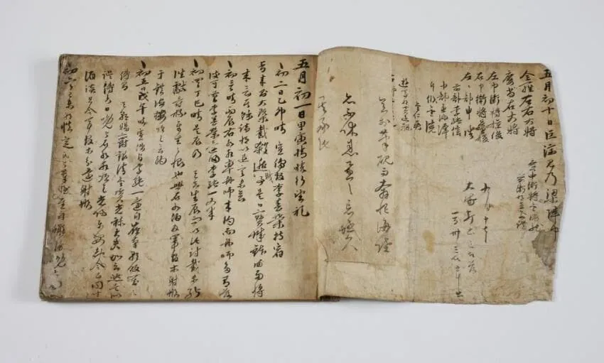
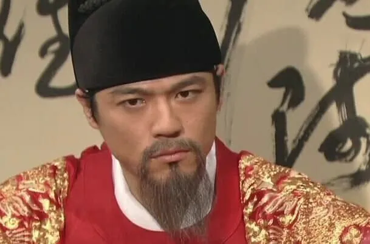

이순신은 사람보는 눈이 매우 엄격해서 웬만한 사람에게 거의 좋은 평가를 하지 않았다
권율장군 조차도 부정적 평가를 한 적이 있을 정도
대신 본인에게는 더 엄격하신 분이라
仗社稷威靈 粗立薄效 寵榮超躐 有踰涯分 身居將閫 功無補於涓埃 口誦敎書 面有慚於軍旅
사직의 위엄과 영험에 힘입어 겨우 조그마한 공로를 세웠는데, 임금의 총애와 영광이 너무 커서 분에 넘쳤다. 장수의 자리에 있으면서 티끌만한 공로도 바치지 못했으니, 입으로는 교서를 외고 있으나, 얼굴에는 군사들에 대한 부끄러움만이 있을 뿐이다.
이게 난중일기에서 장군님이 자신에 대해 내린 평가다

그런데 이순신은 본인이 백의종군 할때도 수군 재정비를 위해 개지랄을 할때도 선조에 대한 불평을 1도 하지않았음
일기라 본인만 보는데 온갖 쌍욕을 적어도 인정할만 한데 안적힌 이유는 2가지로 추측함
속에서 천불이 끓어오르지만 차마 신하로서 군주를 욕할 수 없으셨거나,
아니면 '간신들의 음해로 전하께서 오해하셨던 것이다.'라고 생각하셨거나
근데 개인적으로는 후자가 더 가능성이 높다고 생각
예전에도 선조가 이일이라는 사람이 이순신을 모함했을때 쉴드 처준적도 있고 본인을 초특급 승진 시켜준 적도 있어서
반면 원균에 대한 평가
경상우수사 원균이 와서 보았다. 그 음흉함을 이를 길이 없다.
경상우수사 원균이 왔다. 그 술주정이 심하기 이를 데 없었다. 그 망령된 짓을 차마 입에 올릴 수 없다.
그 흉계가 참으로 가소롭다.
댓글
수집 당시 댓글 28개
이발병 · 3 일 전
이순신을 직접 만나서 이모저모 뜯어보고 압박면접하고 sns뒤져보고 한 건 아님. 유능한 장수 추천받아서 고속승진 시킨 거임. 근데 고속승진도 정도가 있지 너무 빠른 거 아님? 하는 신하들의 간언 좆까고 왜국에서 처들어 올 기미가 있으니 유능한 장수 배치시킨 실행력은 고트
나랑드콜라 · 3 일 전
내생각에 원균은 보고서 작성능력 goat가 아닐까 싶다. 다른 능력 좆도 없는데 보고서 하나로 그 자리까지 올라간거같음. 실적 존나 부풀리고 이빨 존나 잘털고
이발병 · 3 일 전
난중일기 보면 원균이 한양에 보내는 뇌물행렬이 끊이질 않았다고 되어 있음ㅋㅋ
휴먼휴먼 · 3 일 전
작성능력은 나름 있었던 거는 맞음ㅋ 자기가 취한 수급 조작해서 공치사 받았으니까 문제는 그 수급이 왜.놈이 아니라 조선 백성 목을 썰고 조작질해서 문제지...... 까면 깔 수록 개씹새끼임. 아니 개라는 표현도 댕댕이들한텐 모욕임. 고려의 원충갑, 조선의 원연이라는 자랑스런 영웅을 배출한 원씨 집안인데, 원균 저 인간 혼자서 원씨의 이미지를 21세기까지 조져놓음(feat. 원유철).......
5783578965 · 2 일 전
미친놈아 ㅇㄱㄸ 모르냐
휴먼휴먼 · 2 일 전
ㅇㄱㄸ 인건 아는데 뭐 어때? ㅇㅇㅊ이 원균 실드치겠다고 무리수 둔 거 모르는 사람도 없잖아?
5783578965 · 2 일 전
아니 ㅇㄱㄸ는 그런식으로 쓰는게 아님 정떡 접근만으로도 밴인데 정치인 언급은 게시글이 정치떡밥이건 아니건 안돼.... 초성언급도 안돼
회전회오리슈우우웃 · 3 일 전
여러 이유가 있음. 1) 일단 원균 가문 끗발이 좋음. 원씨 가문이 여러 명장들을 낸 가문이었고, 원균 아버지도 장군했음. 2) 원균 본인은 흔히 말하는 맹장처럼 생겼음. 덩치 좋고, 힘 잘 쓰게 생겼고. 3) 실제로 이런 이유들 때문에 원균을 경상 우수사, 이순신을 전라 좌수사로 보낸 거임. 원래 선조 생각은 원균이 탱하고 이순신이 딜하고였음. 이 새끼가 탱 안하고 런칠지는 생각을 못 한 것. 4) 그런데 이순신이 계속 잘 나가서 대폭발을 함. 이제 누군가 안 밀어주면 이순신한테 무게추가 쏠리게 됨. 그래서 원균 밀어줌.
회전회오리슈우우웃 · 3 일 전
추가로 실제 원균의 친동생은 의병장으로 활동하다가 전사했음. 원균을 밀어줄 게 아니라 원균 동생을 밀어줬어야지.
냐냐냥냥냐냥 · 3 일 전
전투중에 수급만 주우러다닌 씹 폐급
Purplerain · 3 일 전
그정도만 이었으면 씹 폐급에서 끝났지. 수급 더모을려고 백성들 목 잘라서 자기 전공 뻥튀기 시도한 개씨발애미뒈진호로새끼임.
선장입수 · 3 일 전
위인들은 보통 남에게 관대하고 자신에게 엄격한편인데 그런데도 원균은..
코코린이 · 3 일 전
이순신 장군이 충심이 강한 것도 있지만 비유하자면 글로벌 대기업 회장님이 지방 지사에 별다른 실적도 없던 일개 과장따리 보고 일 잘하겠는데? 하면서 잘나가는 계열사 사장까지 초고속 승진 시켜준거임. 이정도면 나중에 되어서 좌천시킨다고 한들 서운할 지언정 딱히 원망하지는 않을거 같음
냐냐냥냥냐냥 · 3 일 전
존나 원망할거같은데
인프제 · 3 일 전
존나원망하지만 이거진짜인가? 하고있을때 하이닉스 CEO로 파격임명한거임
필비먹으러온도닥 · 3 일 전
준 다음 뺏어가는게 더 심통나고 분하지
만주의schd · 3 일 전
그냥 좌천정도면 모르지만 본사까지 불러서 조인트까고 폭력행사하고 해고까지 시켰다가 나중에 아쉬워지니까 "ㅎㅎ 미안...너 없으니 개판이네 다시 가서 꼬이고 좆된 일좀 해결해라 근데 원래 자리는 못 돌려줘" 하고 다른 사람들같으면 손도 못 쓸만큼 개병신된 일 처리하라고 보냈잖아..
웨옹이 · 2 일 전
이순신한테 폭력을 행사한적이 없는데 왜..
만주의schd · 2 일 전
백의종군 전에 파직당했을 때 고문당했다고 알고있는디 나는
햄부기온앤온 · 3 일 전
그 '원균'의 자손들이 뭐 명예훼손이다 뭐다해서 이순신장군님 영화 고소하지 않았음?
불멸의러너 · 2 일 전
평택의 읍읍 집안이래 평택가면 원균 기원제도있고 사당도있음
에어컨쟁이 · 3 일 전
그 '흉'
아뎁투스 · 3 일 전
원래 왕 욕하고 싶어도 주변 간신 탓이라고 돌려 말하는 게 고딩 국어에도 나오는 정석이지..
대민성과장증후군 · 3 일 전
런- 평
내가빅뱅이론 · 2 일 전
원흉
온실속악마 · 2 일 전
원균 vs 무다구치 렌야
뜨거원 · 2 일 전
그저 씹좆 ㅋㅋㅋㅋ
수호천사 · 2 일 전
이순신 : 답답할만큼 업무에 있어서 디테일을 잘 챙기면서 A안, B안, C안, D안, E안 준비하는 지독한 일벌레 스타일 이면서 불금에는 또 주말에 클럽(관아기생)에는 가서 열심히 달려주는 놀때는 놀고 일할때는 일하는 열혈남아 스타일. 그러다가 회사를 위해 인생을 바치는 안타까운 타입. 원균 : 입은 존나 살아서, 윗쪽에 사바사바 존나하는 능그렁이 같은 인물인데 정작 일은 졸라 못하고 회사에 손해만 입히고 사고치는 그런 정리대상 1순위.